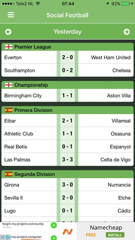

Sociall Football App Screenshot



Do you want to know the latest match results? Do you want to chat with your fellow football fans and share the best match moments? Introducing Social Football - Live Scores, an app that combines live scores with social media.
Sociall Football comes with a very cool design for iPhone, iPad and Android Devices. You will enjoy using it because of its userfriendly design and color that wont hurt your eyes
Live updates are not alawys Live. But Social football app is targeted to provide the most recent and almost instant live updates and scores for you.
You can easily chat with your fans and friends. User can chat about the most recent matches and news. It makes the game more enjoyble for the users.
You can collect points from the chat and discussions you make with your fans and friends. Those ponits will help you to rank up. You can also use them later to buy.
Social Football - Live Scores app supports push notification feature. You can enable push notification for any match so that you won't miss a game.
Social Football Live scores app helps you to share live score, highlights and goals with your friends. It has great userfriendly morden user interface. It also support six language
Live Score Share
Push Notification Support
Six Diffrent Language Support.
Extension Support For Mordern Browsers.
Awesome App Interface
Social Football Live scores app also looks great on Tablets like iPad, Big screens give
you the oportunity to enjoy the game more